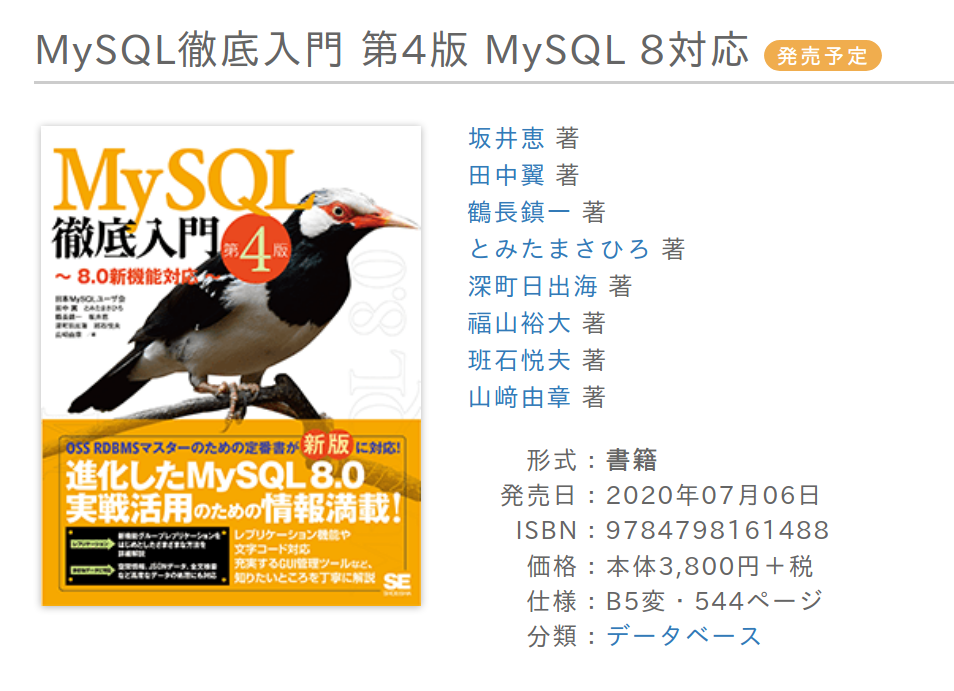
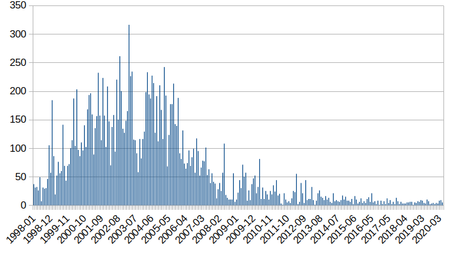

自己紹介

-
とみたまさひろ
-
MySQL
-
Ruby
-
メール / 文字化け
とみたまさひろ
2020-05-25
#mysql_jp
とみたまさひろ
MySQL
Ruby
メール / 文字化け
Ruby で MySQL の UDF を書くためのツール
https://www.seshop.com/product/detail/23085
絶賛校正中!

記憶が怪しいので嘘かもしれません
会社の内製ツール作成＆メンテ
会社で使ってたDBがInf◯rmix(伏せ字)だった
ESQL/C - C に SQL を埋め込む謎言語
メッチャ使いづらい
「普通にCから使える無料のDBないかなー」
MySQL と Postgres95 を発見
当時 Google は無かったらしい
どうやって探したんだっけ…
テキトーに速度測ってみたら MySQL の方が速かった
「じゃあ MySQL でいいや」
「英語苦手だけど日本語マニュアルもあるし」
(廣川類さん @rui_hi 翻訳)
しかし実はその日本語マニュアルの MySQL の
バージョンは古かった… (3.20)
しかたなく英語のマニュアルを読む…
「英語わからん」
「訳しながら読んでると3行前のを忘れる」
「訳した文を書きながら読むか…」
1997/10
質はそれなり
「せっかくだからウェブに公開しよう」
（たしか Monty にメールで公開許可もらったはず…）
日本語を検索すると結果がおかしい
(当時のUNIXではEUC-JPが主流)
デフォルトの latin1 だと
À(C0) = Á(C1) = Â(C2)…
= à(E0) = á(E1) = â(E2)…
EUC-JPの日本語文字は 0xA1〜0xFE
だ(A4C0) = ち(A4C1) = ぢ(A4C2)…
= め(A4E0) = も(A4E1) = ゃ(A4E2)…
「latin1 じゃなくて binary を使えば解決！」
(binary はすべての文字を区別)
ところが
LIKE "%海%" で「続く」がマッチ！
「海」: B3 A4
「続く」: C2 B3 A4 AF
「バイト単位の比較ではダメだ…」
LIKE で文字単位にマッチングさせるパッチを作成
1997/11
文字コード名は jeuc
個人宛にメールで問い合わせが来るけど
情報が個人間に閉じるのがもったいない
「誰かメーリングリスト作ってくれないかなー」
とウェブページに書いたら
「作ってみた」 by ソフトエージェンシー
1998/1
当時のフリーソフトウェア界隈のMLは
初心者に厳しくて殺伐としてた
それは嫌だったのでゆるふわなML運営
メーリングリストでシフトJISを使いたいという要望
シフトJISは2バイト目に 5C がある
表(95 5C)
5C はエスケープ文字 \ と同じ
LIKE だけじゃなくて文字列全般的な考慮が必要
似たようなマルチバイトcharset BIG5 があったので
それを真似てシフトJIS対応パッチを作成
1998/3
この頃から jeuc から ujis に名前を変えたらしい
1998/5
パッチをあてなくても普通に日本語が使えるように
MLの過去ログをウェブで公開したい
どこのサーバー使おうか
せっかくだからドメイン名とる？
「日本MySQLユーザ会」とかでっちあげて
mysql.gr.jp とっちゃえ
2000/3
ドメイン名を取るためには
代表者を決めないといけないので
流れで自分が代表者に
略称候補は色々あったけど
MySQLって、日本じゃマイナー(MINOR）だよね。それは昔の話さ。と言える日をまつ人の集団。
http://www.mysql.gr.jp/mysqlml/mysql/msg/1730
ということで MyNA に
(当時は PostgreSQL がメジャーだった)
そしてその後マイナーじゃなくなりましたとさ
おまけ
メーリングリストの流量

いつまでもメーリングリストでいいの？
Slack ？ んー…